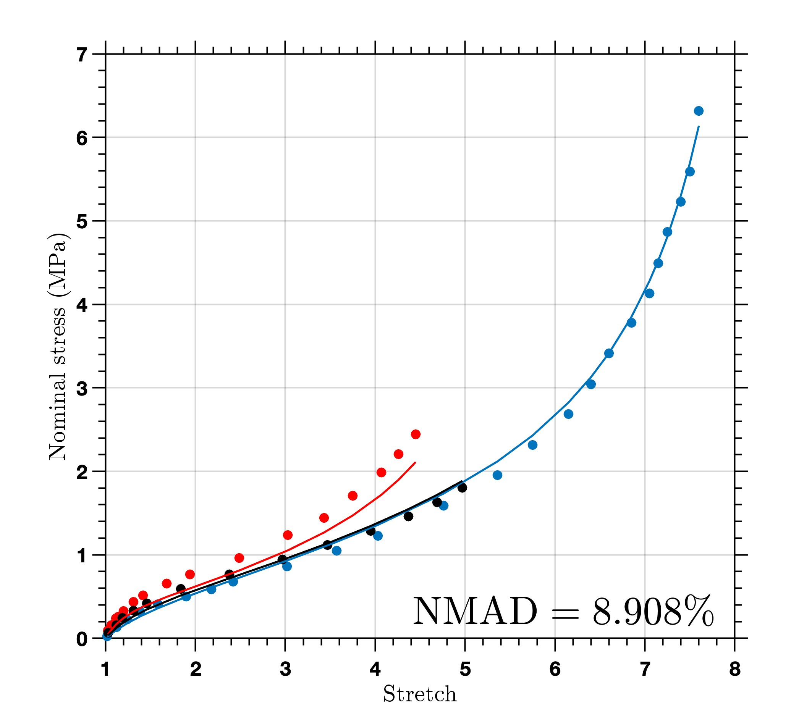
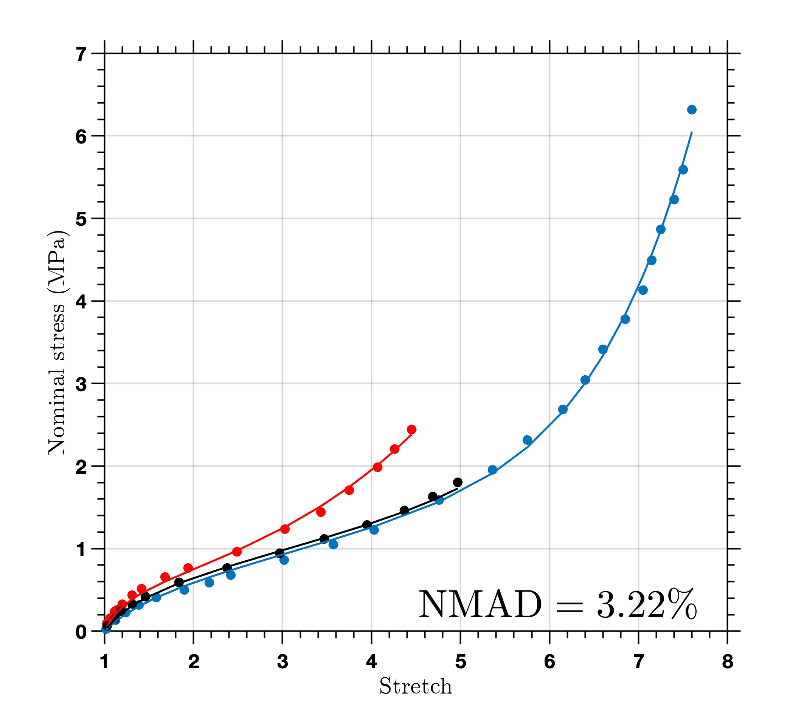
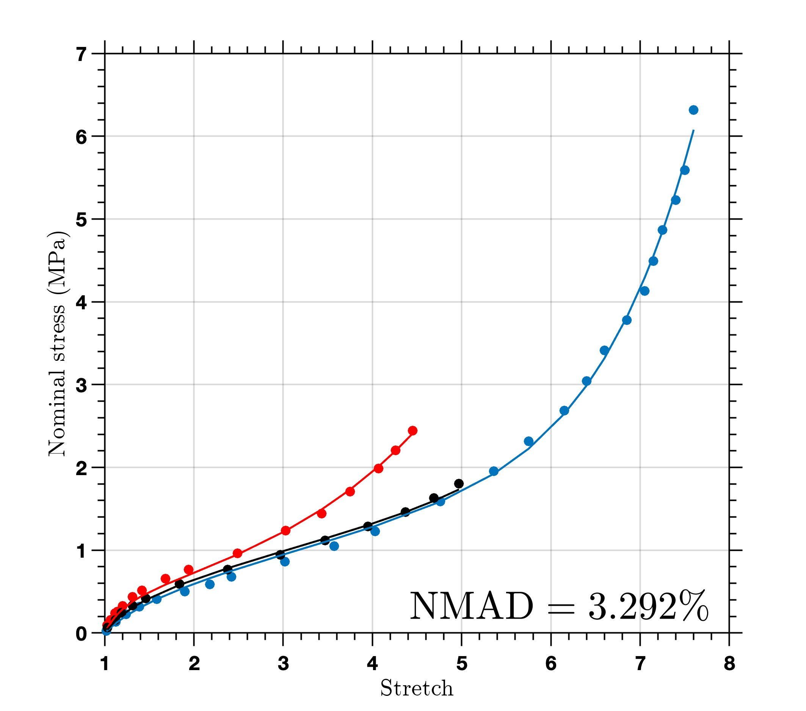
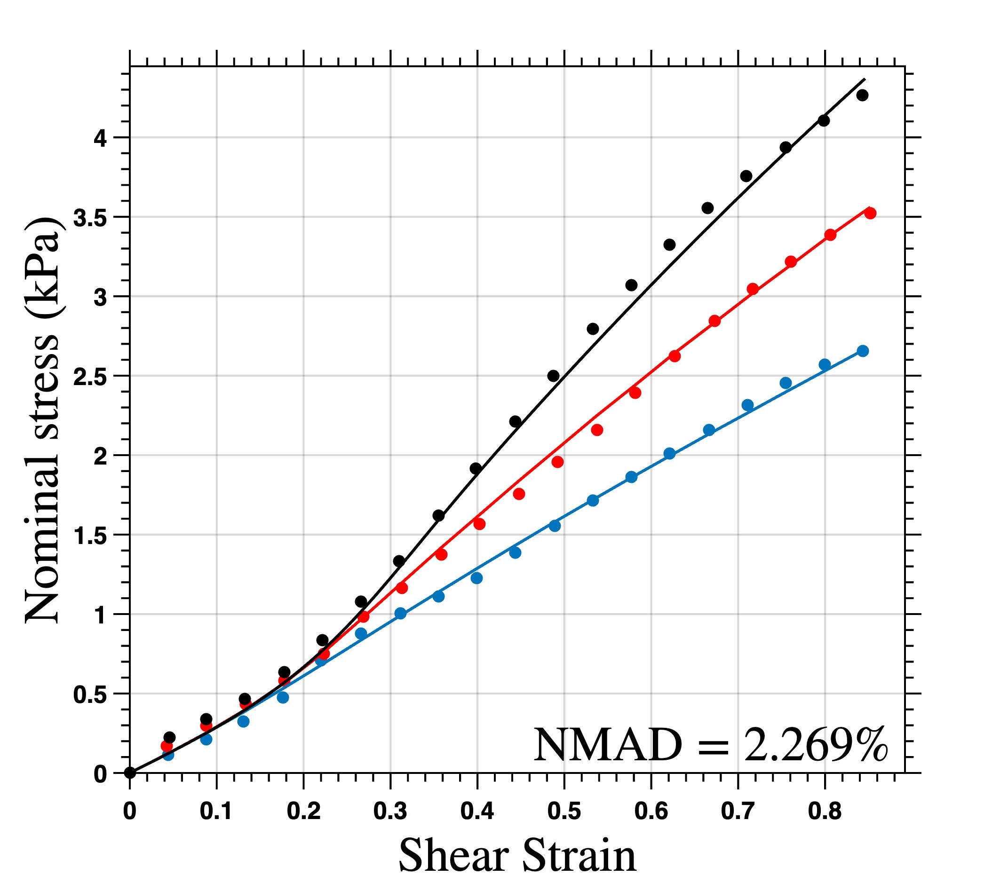
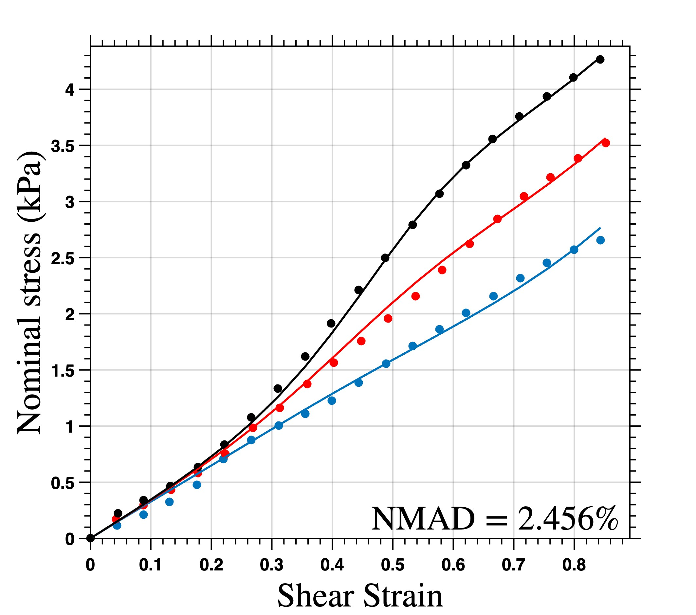
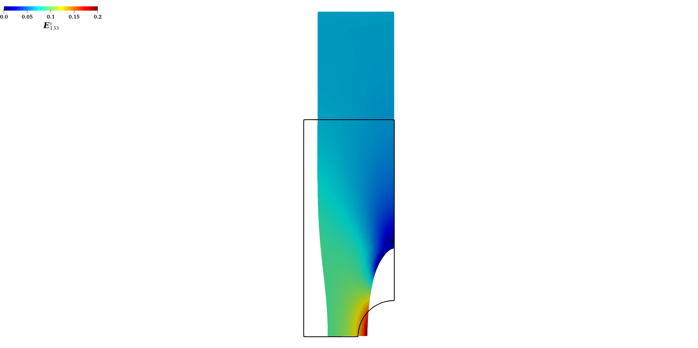
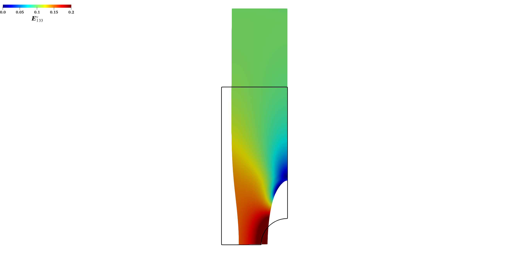
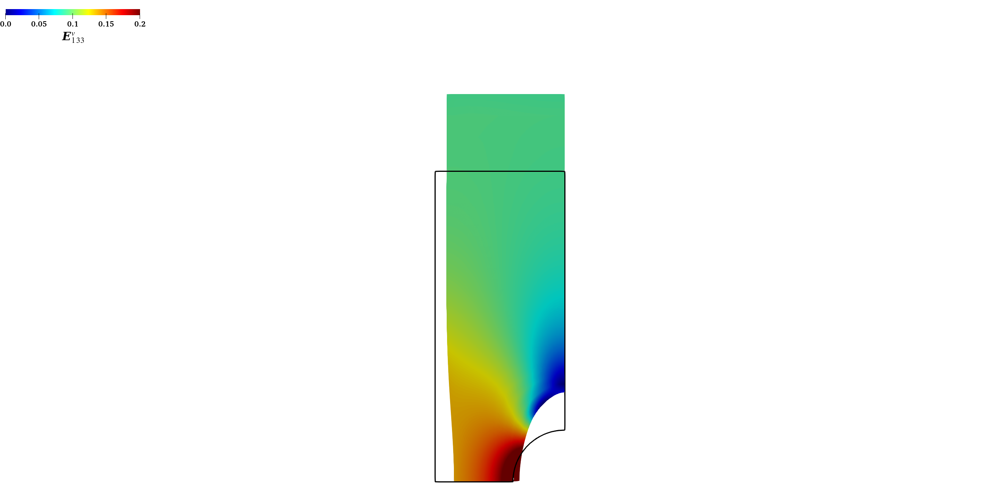

Master Student
Southern University of Science and Technology (SUSTech)
Department of Mechanics and Aerospace Engineering
I'm looking for PhD positions in Fall 2026.
I am currently a Master of Science student (09/2023 - Present) in Mechanics at the Southern University of Science and Technology (SUSTech), advised by Prof. Ju Liu.
Previously, I obtained my Bachelor of Science degree in Theoretical and Applied Mechanics from SUSTech (09/2019 - 06/2023).
We adopted hyperelastic models of Hill's class with quadratic forms, compared with the classical eight-chain model and Ogden model, see more details in my [2].



Calibration against Treloar's experimental data for rubber. From left to right: the classical eight-chain model, Hill's class model with quadratic energy and Curnier-Rakotomanana strain, and the Ogden model.
We developed a novel viscoelastic modeling theory utilizing the Green-Naghdi-type assumption to decompose elastic and inelastic deformations. This assumption applies to both linear and nonlinear viscoelastic models. In the linear regime, it yields a stress expression in the form of a hereditary integral. In the nonlinear case, the kinematic decomposition, facilitated by the introduction of generalized strains, renders the decomposition calibratable rather than pre-declared or fixed. See more details in my [2] and [3].


Comparison of nonlinear viscoelastic models based on Green-Naghdi-type decomposition against the traditional multiplicative decomposition model. We utilized experimental data of human brain tissue under simple shear (30, 60, 90 s-1) from Donnelly and Medige (1997). All models employed the modified eight-chain energy function from Bischoff et al. (2001). From left to right: Green-Naghdi-type decomposition with Curnier-Rakotomanana strain, Green-Naghdi-type decomposition with Hencky strain, and multiplicative decomposition.
We are also conducting constitutive development within our group's open-source finite element solver PERIGEE, enabling finite element simulations of our viscoelastic models. See more details in [2] and [3].



Finite element simulation results. The geometry consists of a plate with a central hole. The loading condition involves uniaxial tension from 0-10s, relaxation from 10-20s, and unloading from 20-25s. The distribution of the Cauchy stress component in the loading direction is observed.